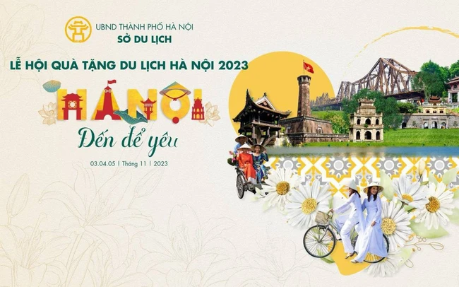
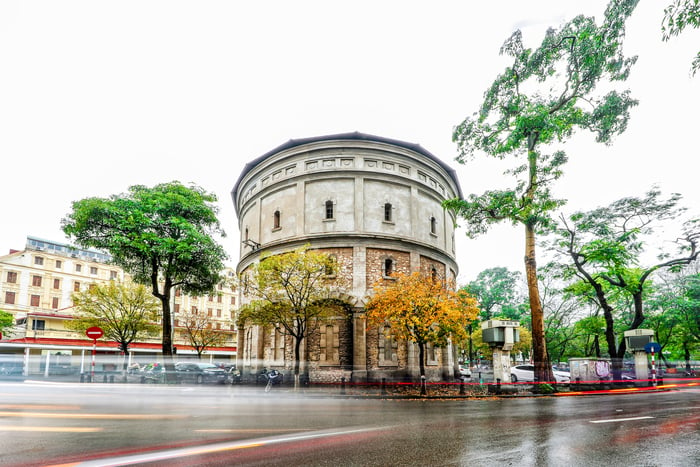
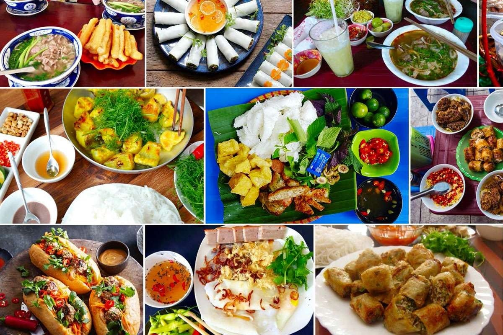

Sự kiện sắp tới
-

Sự kiện đầu tiên
Lễ hội Quà tặng Du lịch Hà Nội năm 2023 với chủ đề “Hà Nội - Đến để yêu” sẽ được tổ chức từ ngày 3 - 5/11/2023 tại phố đi bộ Trần Nhân Tông, quận Hai Bà Trưng.
-

Sự kiện thứ hai
Bốt Hàng Đậu (Hà Nội) sẽ được cải tạo, tổ chức trưng bày, mở cửa cho người dân đến tham quan từ ngày 17/11-31/12/2023.
Về chúng tôi

Hãy đến với chúng tôi, tôi sẽ đưa bạn đến những nơi đẹp nhất Hà Nội
Dịch vụ của chúng tôi
Tham quan di tích lịch sử
Khám phá lịch sử Hà Nội là một cuộc hành trình hấp dẫn để tìm hiểu về quá khứ của dân tộc Việt Nam cũng như giúp bạn thấy được sự phát triển của một thành phố hiện đại, năng động sau biết bao nhiêu biến cố đã xảy ra trong những năm tháng đầy khó khăn, khổ ải.
Khám phá ẩm thực Hà Thành
Ẩm thực Hà Nội không chỉ có nét đặc trưng của ẩm thực Việt mà còn là nơi hội tụ ẩm thực Việt. Đúng vậy, đến với Hà Nội bạn có thể dễ dàng thưởng thức những món của các vùng miền như đặc sản núi rừng như nhộng ong rừng, thịt lợn Mường, gà rừng,…Hay những món ăn miền trung như bún bò Huế, bánh Huế, cao lầu…đến những món Sài Gòn như cơm tấm, bánh canh, lẩu…
